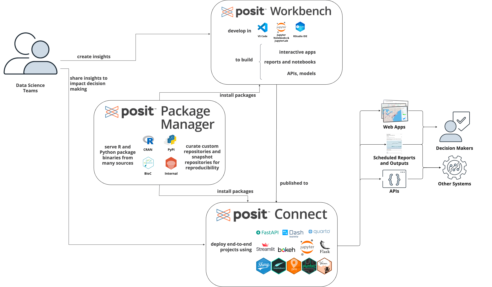
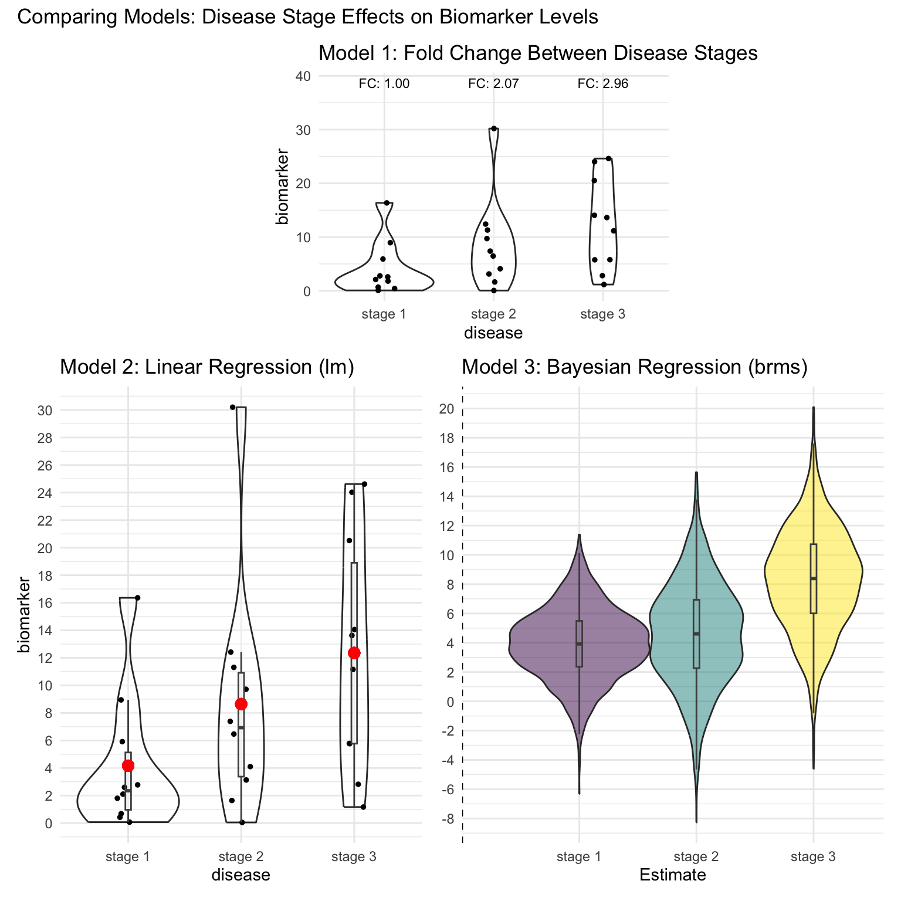

Building Data Products for Precision Medicine: Insights from Industry
Nick Giangreco, PhD

Hi, I’m Nick 👋
- Biochemistry background
- Self-taught bioinformatician
- Research scientist in biomedical data science
- Returned to Buffalo during COVID
- (Remote) Engineer for Precision Medicine
- ‘Science to Medicines’ mission
- Not a traditionally tech organization
I am both a scientist and engineer for Precision Meddicine
I filled a gap of providing tools with fast impact
I taught myself using online books, blogs, videos, and side projects
When they became available, LLMs helped draft code I asked for
I use Posit Team to generate data products

This presentation is my perspective doing data science in industry
I really liked academia and doing biomedical data science research
- I was pretty OK at it too: ~ 12 papers with 6 as first author
- No LLMs at that time!
No one told me the difference between academic vs. industry work
There’s some key lessons and insights that I wish I knew beforehand
I’d like to share insights/tips as an early-career data scientist
This is an N=1, results may vary, perspectives are my own

Tip 1 of 4: Making your work transparent can be more important than completing assigned work
Tip 1 of 4: Making your work transparent can be more important than completing assigned work
You (and your team) are assigned work including dozens of projects
Stakeholders are consumers and producers of your work
Senior Leadership (SL) are consulted/informed for prioritization.
Managers/Directors are accountable to SL
If Managers/Directors can’t communicate your work, how will SL know?
Here’s an example workflow that would communicate your work to Leadership
Give management your book of work with summaries so that the corporate machine keeps running

Tip 2 of 4: Let your collaborators/stakeholders explore the data
This is an example for interactively examining interesting data points using Observable JS
viewof bill_length_min = Inputs.range(
[32, 50],
{value: 35, step: 1, label: "Bill length (min):"}
)
viewof islands = Inputs.checkbox(
["Torgersen", "Biscoe", "Dream"],
{ value: ["Torgersen", "Biscoe", "Dream"],
label: "Islands:"
}
)
filtered = data.filter(function(penguin) {
return bill_length_min < penguin.bill_length_mm &&
islands.includes(penguin.island);
})This is an example for interactively examining interesting data points using R
Tip 3 of 4 Always compare results of your complex models to simple, known, and understood models
Simpler, understood models almost always win
Sometimes other models better fit the use case
Present both and allow comparisons!
Adoption will follow acceptance for the business use case

Tip 4 of 4: Learn how to use AI to make yourself more productive
- At a company, you have deliverables, priorities, limited resources, and timelines
- Leverage tools to make good use of available resources
- Big companies usually have an internal LLM resource
- Use them for drafts/initial start, and learning
- Always vet the outputs and steer the direction
- This presentation involved 50/50 ChatGPT + me
Lessons from a former graduate student
- Do internships
- Take advantage of being a student
- Network and learn as much as you can!
- Invest in your career
- Go to conferences
- Identify your domain
- Learn what energizes you
- Find people that inspire you

Feel free to reach out!
nickg.bio
https://www.linkedin.com/in/nickgiangreco/
nick.giangreco AT gmail.com